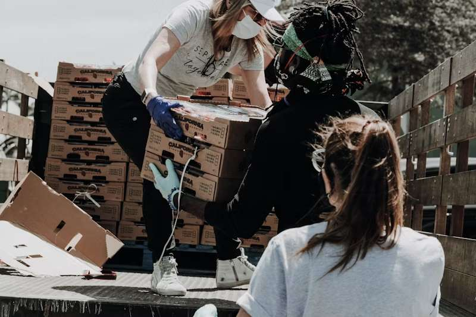
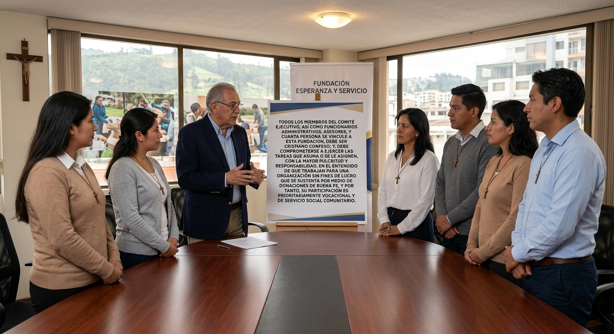
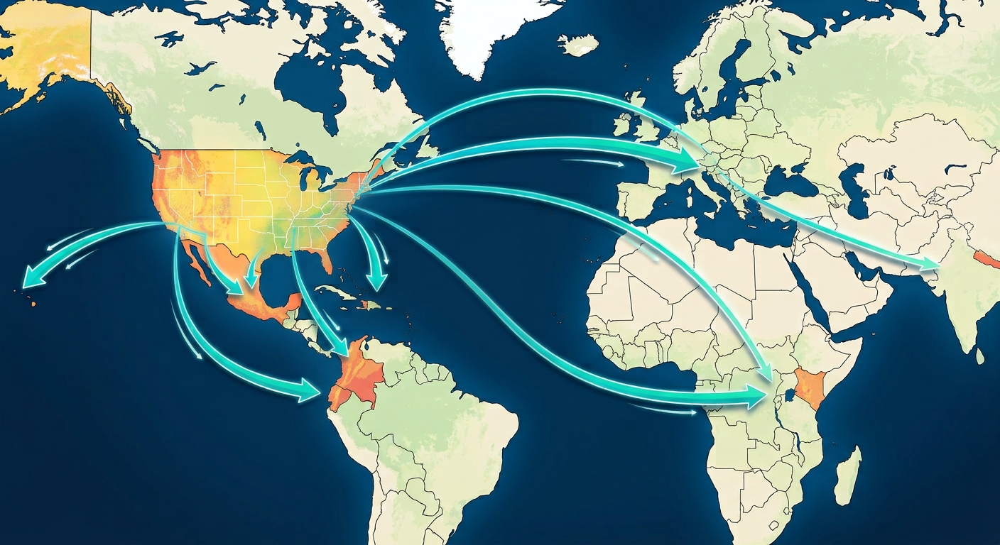
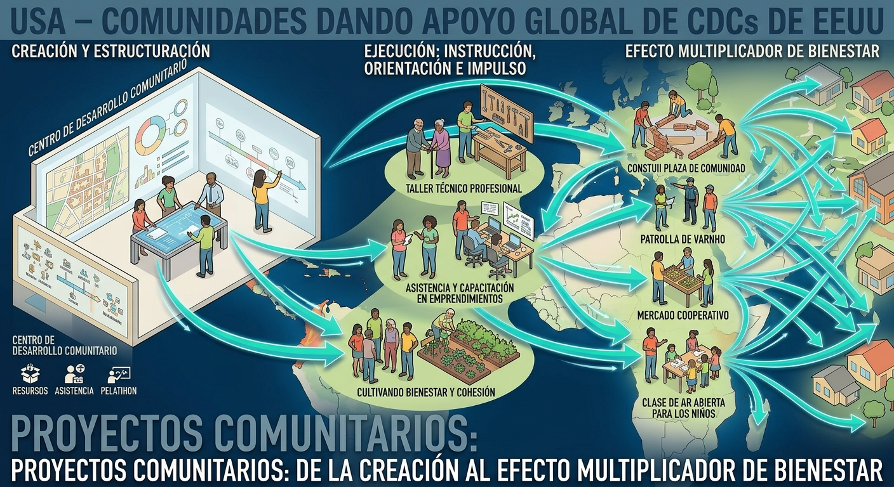

Fundación Ciudad Refugio
Centro de Desarrollo Cristiano
Somos ciudadanos de pensamiento Cristocéntrico
comprometidos con el bienestar social de la comunidad

FUNDACIRE es el nombre abreviado de “Fundación Ciudad Refugio”.Somos una Organización Sin Fines de Lucro (501.C3). Conforme señala nuestro slogan, “Somos ciudadanos de pensamiento Cristo céntrico, comprometidos con el bienestar social de la comunidad“, que aspiramos a ofrecer apoyo sustantivo a personas en situaciones adversas, para las cuales se requiera asesoría, instrucción, dirección, además de motivación para que puedan salir adelante, y se conviertan en elementos altamente productivos dentro de la sociedad en que vivimos.

Todos los miembros del Comité Ejecutivo, así como funcionarios administrativos, asesores, y cuanta persona se vincule a esta Fundación, debe ser cristiano confeso; y, debe comprometerse a ejercer las tareas que asuma o se le asignen, con la mayor pulcritud y responsabilidad, en el entendido de que trabajan para una Organización Sin Fines de Lucro que se sustenta por medio de donaciones de buena fe, y por tanto, su participación es prioritariamente vocacional y de servicio social comunitario.

Visión : Como organización de carácter internacional no lucrativa, FUNDACIRE se mantiene desarrollando proyectos que ayuden a superar necesidades de grupos sociales y/o individuos vulnerables del área geográfica donde la Fundación tengan presencia.

Su misión es altruista, pero a la vez comprometida con hacer el bien, involucrando en sus proyectos a organizaciones y/o individuos calificados para la ejecución de los proyectos que se dirijan desde la Sede, o en los Centros de Desarrollo Comunitario locales, o sedes en países fuera de los Estados Unidos.

Crear, estructurar y ejecutar proyectos en Centros de Desarrollo Comunitario, donde se desarrollen, para ofrecer instrucción, orientación e impulso a grupos o individuos marginados, para que se conviertan en un factor multiplicador de bienestar para sus vecindarios, y por extensión, para la comunidad más inmediata.
Jornadas médicas comunitarias y programas de asistencia alimentaria para niños y adultos mayores.
Entrega de útiles, becas de estudio y talleres de capacitación técnica para jóvenes.
Mejoramiento de infraestructura básica y proyectos de integración social.